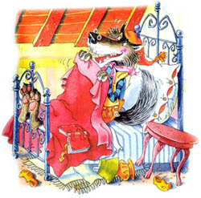

Волк ворвался в комнату. Он не ел целых три дня и был поэтому очень
голоден. Он тотчас проглотил Бабушку. Потом он натянул на себя бабушкин
халат, забрался на постель и стал поджидать Красную Шапочку, которая через
некоторое время пришла и постучалась в дверь.
- Кто там? - спросил Волк бабушкиным голосом. Его голос был хриплым, но
Красная Шапочка подумала, что у Бабушки болит горло.
- Это я, Красная Шапочка, - сказала она. - Я принесла тебе пирожков и
горшочек свежевзбитого масла.
- Открой дверь и войди, - сказал волк таким ласковым голосом, насколько
мог.
Он натянул одеяло до самых глаз.

- Поставь свою корзинку на стол и подойди ко мне, - сказал волк.
Красная Шапочка подошла поближе. Она сказала:
- Бабушка, какие у вас длинные руки!
- Это чтобы получше обнимать тебя, моя дорогая, - сказал волк.
- Бабушка, какие у вас длинные уши!
- Это чтобы лучше слышать тебя, моя дорогая.
- Бабушка, какие у вас большие глаза!
- Это чтобы получше видеть тебя, моя дорогая.
- Бабушка, какие у вас большие зубы!
- Это чтобы съесть тебя! - сказал волк и проглотил Красную Шапочку.